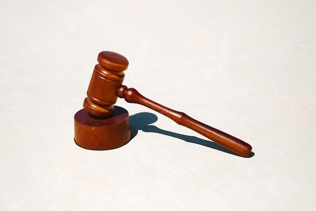

Halo, Semuanya! Hari baru wawasan baru! Pada kesempatan kali ini aku akan membagikan wawasanku mengenai Peraturan dan Regulasi Tentang Hak Kekayaan Intelektual yang aku dapatkan setelah menghadiri kelas dengan mata kuliah "Etika Bisnis" di Universitas Jember. Sebagian besar orang mungkin hanya mengetahui tentang Hak Cipta saja. Tetapi, kita juga harus memahami jenis hak lain juga. Langsung saja kita bahas!
Peraturan dan Regulasi Tentang Hak Kekayaan Intelektual
Hak Kekayaan Intelektual
Hak atas Kekayaan Intelektual (HaKI) adalah hak ekslusif yang diberikan suatu hukum atau peraturan kepada seseorang atau sekelompok orang atas karya ciptanya. Sedangkan menurut UU yang telah disahkan oleh DPR-RI pada tanggal 21 Maret 1997, HaKI adalah hak-hak secara hukum yang berhubungan dengan permasalahan hasil penemuan dan kreativitas seseorang atau beberapa orang yang berhubungan dengan perlindungan permasalahan reputasi dalam bidang komersial (commercial reputation) dan tindakan/jasa dalam bidang komersial (goodwill). Secara sederhana, HaKI mencakup Hak Merek, Hak Paten, dan Hak Cipta dimana ketiga hak tersebut diatur dalam undang-undang.
Definisi
Hak Cipta
Berdasarkan UU No. 28 Tahun 2018 Pasal 1, berikut adalah penjelasan tentang Hak Cipta, Pencipta, Ciptaan, Pemegang Hak Cipta, dan Hak Terkait:
- Hak Cipta
- Hak Cipta merupakan Hak ekslusif pencipta yang timbul secara otomatis berdasarkan prinsip deklaratif setelah suatu ciptaan diwujudkan dalam bentuk nyata tanpa mengurangi pembatasan sesuai dengan ketentuan pertauran per-undang-undangan.
- Pencipta
- Pencipta merupakan seseorang atau beberapa orang yang secara sendiri-sendiri atau bersama-sama menghasilkan suatu ciptaan yang bersifat khas dan pribadi.
- Ciptaan
- Ciptaan merupakan setiap hasil karya di bidang ilmu pengetahuan, seni, dan sastra yang dihasilkan atas inspirasi, kemampuan, pikiran, imajinasi, kecekatan, keterampilan atau keahlian yang diekspresikan dalam bentuk nyata.
- Pemegang Hak Cipta
- Pencipta sebagai pemilik Hak Cipta, pihak yang menerima hak tersebut secara sah dari Pencipta, atau pihak lain yang menerima lebih lanjut hak dari pihak yang menerima hak tersebut secara sah.
- Hak Terkait
- Hak ini merupakan hak yang berkaitan dengan Hak Cipta yang merupakan hak ekslusif bagi pelaku pertunjukan, produser, fonogram, atau lembaga Penyiaran.
Hak Paten
Berdasarkan UU No.13 Tahun 2016 Pasal 1, terdapat beberapa penjelasan terkait Paten, Invensi, Inventor, Lisensi, dan Royalti. Berikut adalah penjelasannya:
- Paten
- Hak ekslusif yang diberikan oleh negara kepada inventor atas hasil invensinya di bidang teknologi untuk jangka waktu tertentu melaksanakan sendiri invensi tersebut atau memberikan persetujuan kepada pihak lain untuk melaksanakannya.
- Invensi
- Ide inventor yang dituangkan ke dalam suatu kegiatan pemecahan masalah yang spesifik di bidang teknologi berupa produk atau proses, atau penyempurnaan dan pengembangan produk atau proses.
- Inventor
- Seseorang atau beberapa orang yang menuangkan ide ke dalam kegiatan yang menghasilkan invensi.
- Lisensi
- Izin yang diberikan oleh pemegang paten kepada penerima lisensi berdasarkan perjanjian tertulis untuk menggunakan paten yang masih dilindungi dalam jangka waktu dan syarat tertentu.
- Royalti
- Imbalan yang diberikan untuk penggunaan hak atas Paten.
Hak paten dapat diajukan dengan alur tertentu, yaitu Rancangan Dokumen Usulan Paten, Uraian Potensi Komersialisasi, dan Uraian Penelusuran Paten.
Hak Merek
Berdasarkan UU No.20 Tahun 2016 Pasal 1, berikut adalah penjelasan mengenai hal-hal terkait dengan hak merek:
- Merek
- Tanda yang dapat ditampilkan secara grafis berupa gambar, logo, nama, kata, huruf, angka, susunan warna, dalam bentuk 2 dimensi dan.atau 3 dimensi, suara, hologram,atau kombinasi dari 2 atau lebih unsur untuk membedakan barang dan/atau jasa.
- Merek Jasa
- Merek yang digunakan pada jasa yang diperdagangkan oleh seseorang atau beberapa orang atau badan hukum untuk membedakan dengan jasa sejenis lainnya.
- Merek Dagang
- Merek yang digunakan pada barang yang diperdagankan oleh seseorang atau beberapa oarang atau badan hukum untuk membedakan dengan barang sejenis lainnya.
- Hak atas Merek
- Hak ekslusif yang diberikan oleh negara kepada pemilik Merek yang terdaftar untuk jangka waktu tertentu dengan menggunakan sendiri Merek tersebut atau memberikan izin kepada pihak lain untuk menggunakannya.
- Indikasi Geografis
- Suatu tanda yang menunjukkan daerah asal suatu barang dan/atau produk yang karena faktor lingkungan geografis termasuk faktor alam, faktor manusia atau kombinasi dari kedua faktor tersebut memberikan reputasi, kualitas, dan karakterisktik tertentu pada barang dan/atau produk yang dihasilkan.
- Hak atas Indikasi Geografis
- Hak ekslusif yang diberikan oleh negara kepada pemegang hak Indikasi Geografis yang terdaftar, selama reputasi, kualitas, dan karakterisktik yang menjadi dasar diberikannya perlindungan atas Indikasi Geografis tersebut masih ada.
Invensi
Invensi yang dapat diberi paten
- Invensi dianggap baru jika pada tanggal penerimaan invensi tersebut tidak sama dengan teknologi yang diungkapkan sebelumnya.
- Teknologi yang diungkapkan sebelumnya merupakan teknologi yang telah diumumkan di Indonesia atau diluar Indonesia dalam suatu tulisan, uraian lisan, peragaan penggunaan atau dengan cara lain sebelum tanggal penerimaan pengajuan paten.
Invensi yang tidak dapat diberi paten
- Proses atau produk yang pengumuman, penggunaan, atau pelaksanaannya bertentangan dengan peraturan perundang-undangan, agama, ketertiban umum, atau kesusilaan.
- Metode pemeriksaan, perawatan, pengobatan dan/atau pembedahan yang diterapkan terhadap manusia atau hewan.
- Teori dan metode di bidang ilmu pengetahuan dan matematika.
- Makhluk hidup kecuali jasad renik.
- Proses biologis yang esensial untuk memproduksi tanaman atau hewan.
- Kreasi estetika.
- Skema.
- Aturan dan metode yang hanya berisi program komputer.
- Presentasi mengenai suatu informasi.
- Aturan atau metode untuk melakukan kegiatan bisnis dan permainan.
Merek yang Tidak Dapat Didaftarkan
- Bertentangan dengan ideologi negara, perundang-undangan, agama, kesusialaan, dan ketertiban umum.
- Sama dengan, berkaitan dengan atau hanya menyebut barang dan/atau jasa yang dimohonkan pendaftarannya.
- Memuat unsur yang menyesatkan masyarakat.
- Memuat keterangan yang tidak sesuai dengan kualitas, manfaat, atau khasiat dari barang/jasa yang diproduksi.
- Tidak memilliki pembeda dan/atau merupakan nama umum atau lambang milik umum.
Pengajuan Hak Merek yang Ditolak
- Merek terdaftar milik pihak lain atau dimohonkan lebih dahulu oleh pihak lain untuk barang atau jasa sejenis.
- Merek terkenal milik pihak lain untuk barang atau jasa sejenis.
- Merek terkenal milik pihak lain untuk barang atau jasa tidak sejenis yang memenuhi persyaratan tertentu.
- Merupakan atau menyerupai nama atau singkatan nama orang terkenal, foto atau nama badan hukum yang dimiliki orang lain kecuali atas persetujuan tertulis dari yang berhak.
- Merupakan tiruan atau menyerupai nama atau singkatan nama, bendera, lambang atau simbol atau emblem suatu negara atau Lembaga nasional maupun internasional kecuali atas persetujuan pihak yang berwenang.
- Merupakan tiruan atau menyerupai tanda atau cap stempel resmi yang digunakan oleh negara atau Lembaga pemerintah kecuali atas persetujuan tertulis.
Kasus HKI
Apple vs Samsung
Berikut merupakan salah satu contoh kasus HKI antara Apple dan Samsung, dan alur proses hukumnya:
- April 2011: Gugatan Apple kepada Samsung karena meniru desain iPhone
- Mei 2011: Pengadilan menolak permintaan dari Samsung mengenai data iPhone 5 dan iPad 3
- Agustus 2011:Pelarangan penjualan Galaxy Tab 10.1 di Eropa kecuali Belanda. Juga penghentian penjualan Galaxy S, S-2, Ace di Jerman
- September 2011: Penghentian penjualan Samsung Galaxy Tab 10.1
- Oktober 2011: Pelarangan penjualan Galaxy Tab 10.1 di Australia
- November 2011: Penuntutan terhadap desain Samsung Galaxy Tab 10.1 tetapi tidak dikabulkan oleh pengadilan
- Desember 2011: Perseteruan Apple dan Samsung masih memanas
- Januari 2012: Gugatan terhadap 10 jenis produk smartphone besutan Samsung
- Februari 2012: Desain Galaxy Tab 10.1 diputuskan tidak mirip dengan iPad oleh pengadilan Jerman
- Maret 2012: Gugatan kepada Apple karena ada 3 paten teknologi miliknya telah digunakan oleh Apple pada iPhone 4S dan iPad 2
- April 2012: Upaya negosiasi dari kedua belah pihak
- Juli 2022: Merupakan tahap akhir dari perseteruan Apple dan Samsung, keduanya sama-sama memberikan berbagai bukti
- Agustus 2012: Dewan juri memutuskan bahwa Samsung telah melanggar beberapa paten milik Apple
Kasus-Kasus Lain
- Oskadon vs Oskangin
- Jasa Instalasi Program Komputer Bajakan
- Aqua vs Aqualiva
- Larutan Penyegar Cap Kaki Tiga vs Larutan Penyegar Cap Badak
- Yahoo vs Facebook vs Google
- Dunkin Donuts vs Donats' Donuts
- Pedagang VCD/DVD Ilegal
- KIA vs Hyundai
- Tupperware vs Tulipware